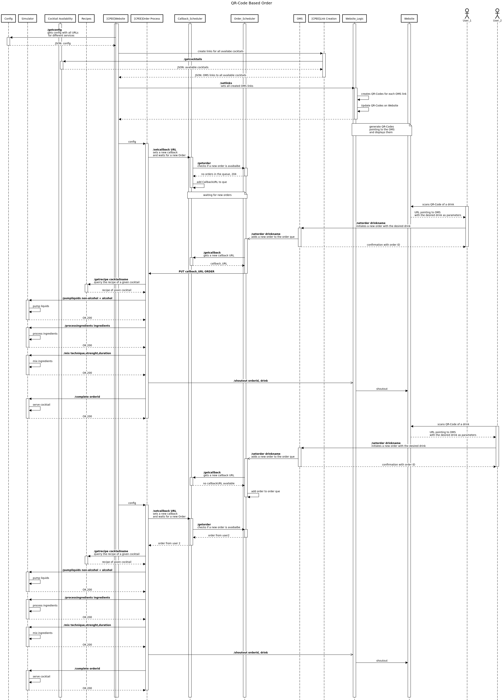
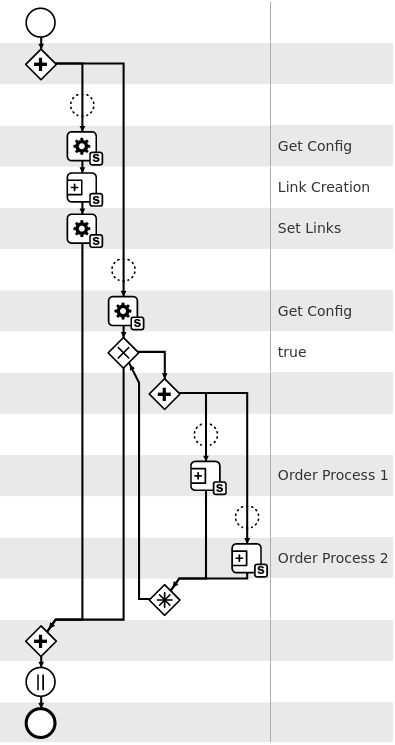
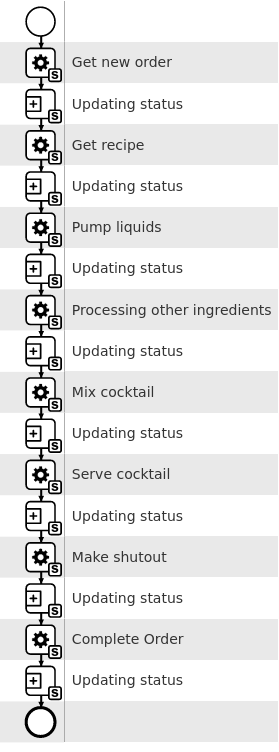
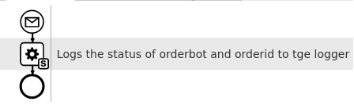
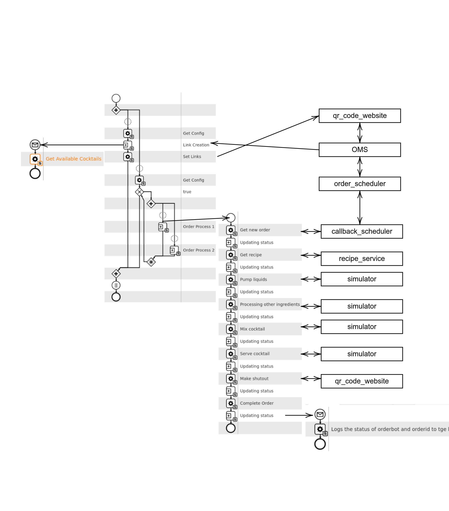

Architectural Design¶
This directory contains the architectural design of the system.
Components¶
The components of the system are as follows:
Schedulers: The schedulers are responsible for scheduling the orders and the cpee callback urls.
Order Management System: The OMS acts as a interface between the QR codes and the order_scheduler.
QR Code Web Application: The qr_website and qr_weblogic are responsible for generating the QR codes, displaying the QR codes and the web logic for displaying the order status.
Recipe Service: The recipe server is responsible for the recipe management.
Simulator: The simulator is responsible for simulating the consume of liquer and the mixing of the liquer.
Order Store: The order store is responsible for storing the orders and the order status.
Overview¶
The figure below shows the more detailed architecture of the complete system. It shows the actions performed when there are two users ordering cocktails.
CPEE Models¶
The CPEE models are as follows:
Website: The main process setting the links to the page and then starting the CPEE order processes.
Link Creation: The process responsible for creating the links to the available cocktails and setting them to the website.
Order: The process responsible for catching a new order, processing and serving the order. After each step the order status is updated by calling the
Order Statusprocess.Order Status: The process responsible for catching the order status and updating the status using the order store. It gets called by the
Orderprocess with parameters order_id, order_bot_id and status. It then calls theorder_storeto update the status.
CPEE Interconnections¶
The figure below shows the high-level architecture of the complete system including all CPEE models. A more detailed view can be found in the respective component’s documentation.
